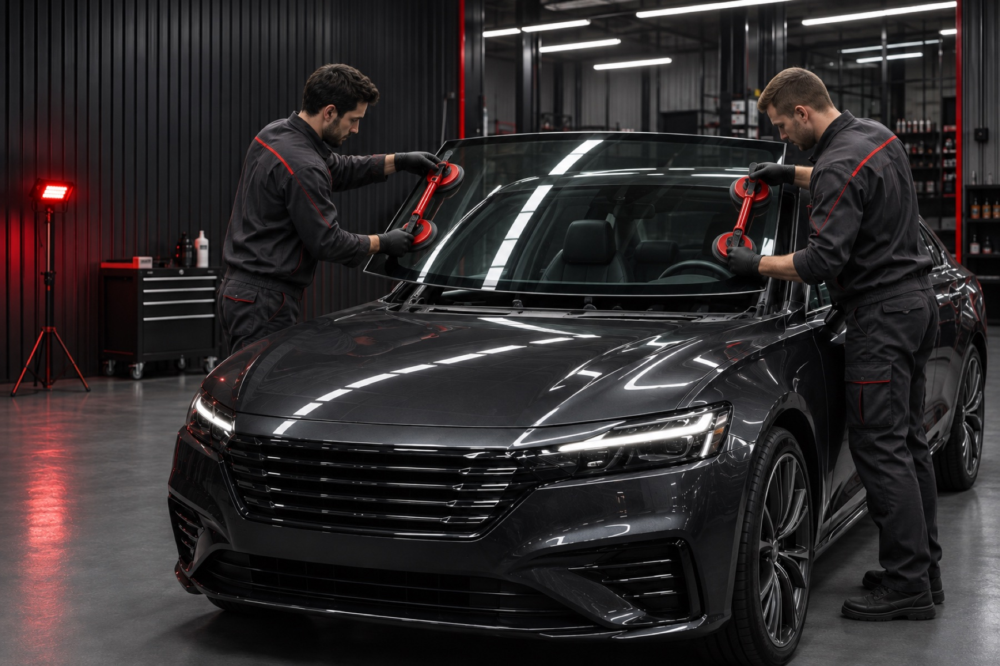
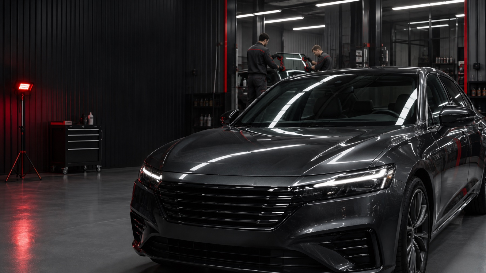
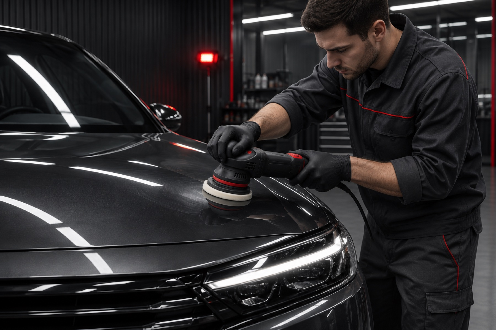
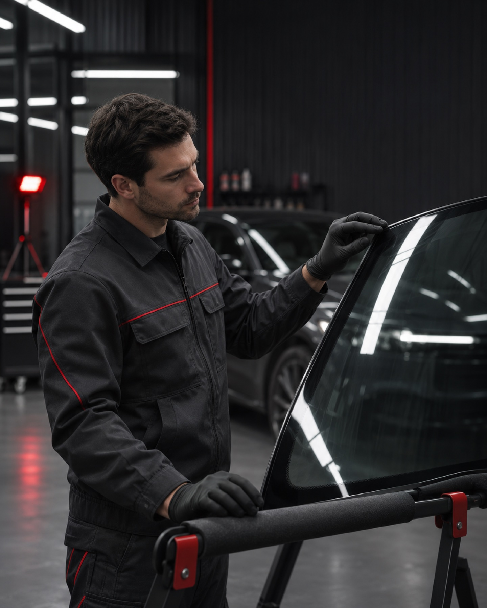
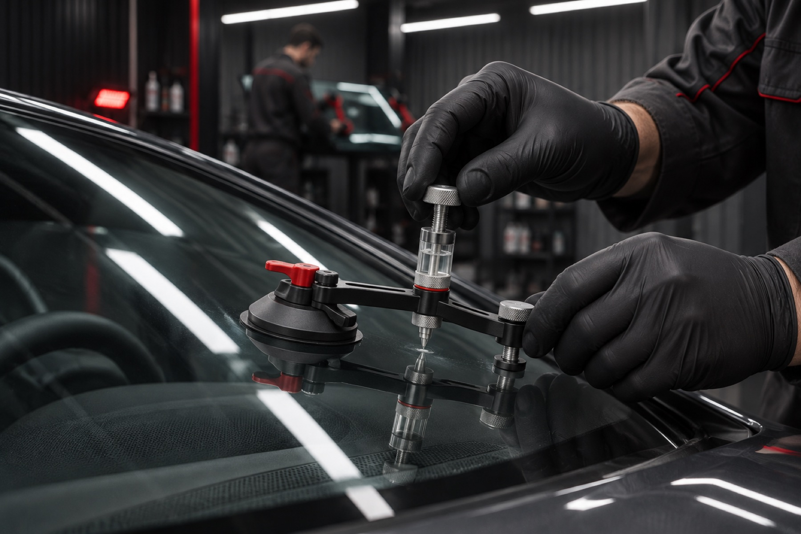

АВТОСТЁКЛА / ОСНОВНОЕ НАПРАВЛЕНИЕ01
Автостёкла для автомобилей
Подбор и установка лобовых, боковых и задних стёкол.

Подберём стекло для вашего автомобиля.
Аккуратно установим. Будем рядом после.
От небольшого скола до нового стекла.
Все необходимые услуги — в одном месте.

АВТОСТЁКЛА / ОСНОВНОЕ НАПРАВЛЕНИЕПодбор и установка лобовых, боковых и задних стёкол.

ДЕТЕЙЛИНГ / УХОД ЗА АВТОМОБИЛЕМСохраняем внешний вид и внимание к каждой поверхности.

Мы занимаемся автостёклами с 2007 года. Подбираем, продаём, устанавливаем и ремонтируем стёкла для легковых автомобилей, автобусов и спецтехники.
Собственные склады и установочные центры помогают найти решение под ваш автомобиль и бюджет.
Посмотреть выполненные работыУ одной модели могут быть разные комплектации.
Поможем разобраться и сохранить нужные функции.

Учитываем автомобиль,
год и комплектацию.
Проверяем крепления датчиков дождя и света, площадку камеры и другие особенности вашего стекла.
Уточняем, нужен ли полный обогрев, обогрев зоны щёток или встроенная антенна. Сохраняем привычные функции автомобиля.
Учитываем проекционный дисплей, атермальное покрытие и другие особенности комплектации.
Не обязательно знать все опции. Сообщите модель и год выпуска — специалист поможет уточнить детали.
Предлагаем варианты разных производителей.
Объясним отличия и проверим совместимость.
Автомобильные стёкла и решения для разных комплектаций.
ПОДБОР ПО АВТОМОБИЛЮСтёкла для широкого круга марок и моделей автомобилей.
ОРИГИНАЛЬНЫЙ ПРОИЗВОДИТЕЛЬСтёкла с необходимыми креплениями и дополнительными опциями.
ВНИМАНИЕ К КОМПЛЕКТАЦИИСравним подходящие варианты по производителю, комплектации и стоимости. Поможем понять, за что вы платите.
Подбирается с учётом модели и конкретной комплектации.
Проверяем характеристики, оснащение и совместимость.
Обсуждаем доступные варианты под ваши задачи и бюджет.
Быстро, качественно поставили боковое стекло. Всем рекомендую. Персонал вежливый.
Поставили стекло лобовое на BMW за 40 минут. Есть Wi-Fi, бесплатный чай и кофе.
Широкий ассортимент стёкол, разных производителей на любой вкус, быстрая замена с гарантией.
От выбора производителя до рекомендаций
по уходу после установки.
На работы по вклейке стекла, с понятными условиями.
Условия гарантии ↗Оборудованные центры для работы круглый год.
Специальные предложения на отдельные позиции.
Полезная деталь для повседневных поездок.
Условия действующих предложений уточнит менеджер.
При заказе автостекла в нашем техцентре. Уточняйте условия.
Расскажите, что нужно сделать.
Поможем с выбором и стоимостью.